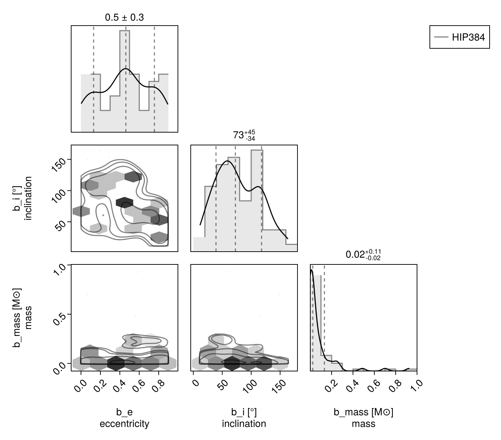
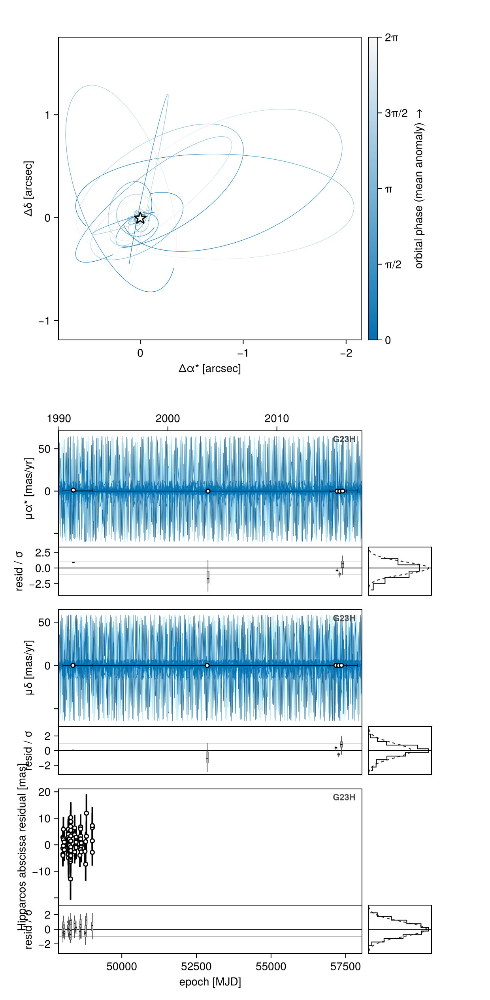
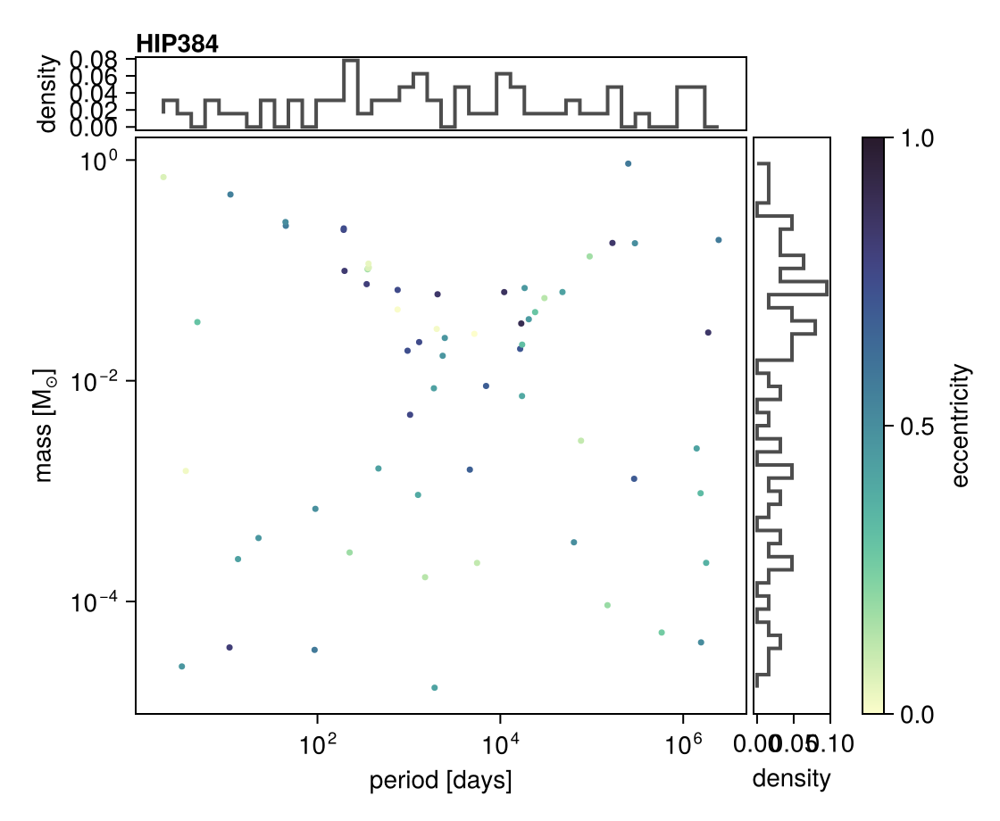
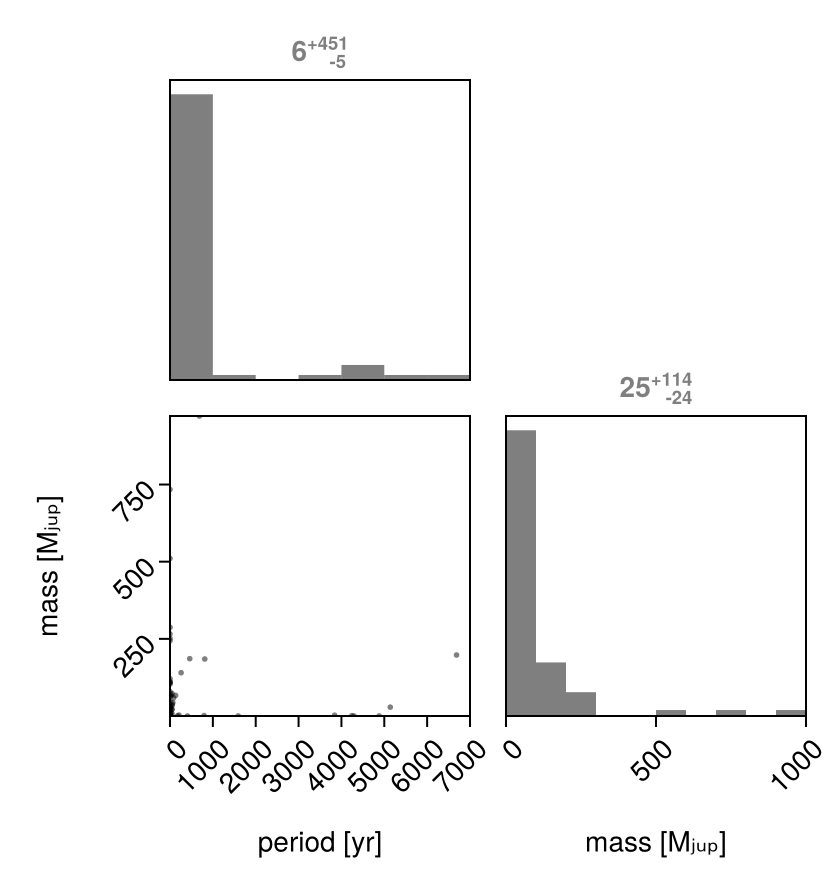

Joint Gaia-Hipparcos Astrometry (G23H)
This tutorial demonstrates how to fit orbit models using the G23H catalog, a comprehensive dataset that combines calibrated proper motions from Hipparcos, Gaia DR2, and Gaia DR3. This method provides the tightest constraints yet on planetary companions using existing published data from Gaia DR2, DR3, and Hipparcos, and is described in Thompson et al. (2026).
Overview
The G23H method combines multiple sources of astrometric information into a single joint likelihood:
- Hipparcos proper motions and intermediate astrometric data (IAD)
- Hipparcos-Gaia proper motion anomaly (from the HGCA)
- Calibrated Gaia DR2 proper motions (cross-calibrated against DR3 reference frame)
- DR3-DR2 scaled position differences (sensitive to short-term proper motion changes)
- Gaia DR3 proper motions
- Gaia astrometric excess noise (via RUWE/UEVA modeling)
- Gaia RV variability constraints (from the 'paired' catalog)
This approach can detect and characterize Jovian planets on ~3-20 AU orbits around nearby stars, sometimes providing sufficient constraints to confirm planetary companions using only existing Gaia and Hipparcos data.
Basic Example: Fitting a Known Exoplanet Host
Let's fit a model to a star with a known companion. We'll use a minimal example that demonstrates the key components.
using Octofitter
using Distributions
using CairoMakie
using PigeonsCreating the Observation Object
The G23HObs object encapsulates all the G23H data for a single star.
# Using a Gaia DR3 source ID
absastrom = G23HObs(; gaia_id=2738776816458107136, target=A, blends=(b,), ref=Barycentre)
# Or using a Hipparcos ID (automatically resolved to a Gaia ID)
absastrom = G23HObs(; hip_id=384, target=A, blends=(b,), ref=Barycentre)
# Approximation for faster sampling -- set to false for real use
absastrom = G23HObs(;
gaia_id=2738776816458107136,
target=A, blends=(b,), ref=Barycentre,
freeze_epochs=true,
)On first use, you'll be prompted to download the G23H catalog (~14 GB) and some additional data. This only happens once; the catalogs are then cached locally.
The observation object automatically:
- Loads the calibrated proper motions from all epochs
- Fetches Gaia scan angles from the GOST service
- Prepares the Hipparcos IAD if available
- Sets up priors on Gaia noise parameters based on the catalog values
gaia_id = 2738776816458107136 # HIP 384Source membership: target= and blends=
target= names the body the catalog source is centred on. blends= names the other bodies whose light falls into that same source, in the order any flux-ratio vector is indexed.
blends is photometry, not dynamics: a body left out of it still moves the target — every mass in the system does — it simply contributes no light. So blends=() is a resolved source, body target alone with its full orbital motion, which is exactly what you want for a resolved secondary's own Gaia entry:
# B's own DR3 row: it is a resolved source, so nothing blends into it.
obs_B = G23HObs(; gaia_id=B_source_id, target=B, blends=(), ref=Barycentre)Flux Ratios
Each blend contributes light to the measured photocentre in proportion to its flux ratio against the target, in two bands: G (for the Gaia DR2/DR3 photocentre) and Hp (for the Hipparcos abscissa). Specify flux_G and flux_Hp on your bodies in consistent units, or they will be assumed dark.
To override that for one observation — a pair that is resolved in Gaia's data but not in your body fluxes, say — pass a constant:
G23HObs(; gaia_id=B_source_id, target=B, blends=(:A,), fluxratio=0.0)which is appended to the observation's default variables rather than replacing them. Give one value per blend, in blends= order. A ratio that has to vary per draw (a sampled resolved-flag) goes in an explicit variables= block under the same name.
Define the Bodies
For G23H models, specify the complete set of parameters that give the system barycentre's motion and position through space: plx, ra, dec, pmra, pmdec, rv, ref_epoch.
A = Body(
name="A",
variables=@variables begin
mass = system.M_pri # Primary mass [Msol]; declared in the system block below
flux_G = 1.0 # the target defines the contrast scale in each band
flux_Hp = 1.0
end
)
planet_b = Body(
name="b",
about=A,
variables=@variables begin
P ~ LogUniform(1.0, 10000 * year2day_julian) # days (1 day to 10000 yr)
# We'll use a mass-ratio parameterization instead of raw mass.
q ~ LogUniform(1e-5, 1)
mass = q * system.M_pri # Msol
e ~ Uniform(0, 0.9)
ω ~ Uniform(0, 2pi)
i ~ Sine()
Ω ~ Uniform(0, 2pi)
M0 ~ Uniform(0, 2pi)
epoch = 57388.5
flux_G = 0.0 # dark to Gaia
flux_Hp = 0.0 # …and to Hipparcos
end
)Building the observation and the system
absastrom = G23HObs(;
gaia_id = gaia_id,
target = A,
blends = (planet_b,),
ref = Barycentre,
include_rv = false, # see the note below
freeze_epochs = true, # faster but approximate; set false for real use
)
absastrom.table.kind12-element Vector{Symbol}:
:iad_hip
:ra_hip
:dec_hip
:ra_hg
:dec_hg
:ra_dr2
:dec_dr2
:ra_dr32
:dec_dr32
:ra_dr3
:dec_dr3
:ueva_dr3ref_epoch = Octofitter.meta_gaia_DR3.ref_epoch_mjd
sys = System(
name="HIP384",
bodies=[A, planet_b],
observations=[absastrom],
variables=@variables begin
M_pri = 1.0 # Primary mass [Msol] - set to your target's mass.
# You can also make it a variable to be marginalized over:
# M_pri ~ truncated(Normal(1.0, 0.1), lower=0.01)
# Parallax prior (use the catalog value, truncated)
plx ~ truncated(Normal(absastrom.catalog.parallax, absastrom.catalog.parallax_error),
lower=max(0, absastrom.catalog.parallax - 10absastrom.catalog.parallax_error))
# Proper motion priors (use wide priors - the data will constrain these)
pmra ~ Uniform(absastrom.catalog.pmra_dr3 - 10, absastrom.catalog.pmra_dr3 + 10)
pmdec ~ Uniform(absastrom.catalog.pmdec_dr3 - 10, absastrom.catalog.pmdec_dr3 + 10)
# Fixed coordinates and RV from the catalog -- used for high proper motion
# & RV propagation
ra = $(absastrom.catalog.ra)
dec = $(absastrom.catalog.dec)
rv = $(isnan(absastrom.catalog.radial_velocity) ? 0.0 : absastrom.catalog.radial_velocity * 1e3)
# Reference epoch for RV, RA, DEC, and parallax
ref_epoch = $ref_epoch
end
)
model = Octofitter.LogDensityModel(sys)LogDensityModel for System HIP384 of dimension 19 and 12 epochs with fields .ℓπcallback and .∇ℓπcallback
Selecting Data Subsets
You can restrict the channel set at construction with channels=:
# Available observation types:
# :iad_hip - Hipparcos intermediate astrometric data
# :ra_hip - Hipparcos RA proper motion
# :dec_hip - Hipparcos Dec proper motion
# :ra_hg - Hipparcos-Gaia RA proper motion
# :dec_hg - Hipparcos-Gaia Dec proper motion
# :ra_dr2 - Gaia DR2 RA proper motion
# :dec_dr2 - Gaia DR2 Dec proper motion
# :ra_dr32 - DR3-DR2 RA scaled position difference
# :dec_dr32 - DR3-DR2 Dec scaled position difference
# :ra_dr3 - Gaia DR3 RA proper motion
# :dec_dr3 - Gaia DR3 Dec proper motion
# :ueva_dr3 - Gaia DR3 astrometric excess noise (RUWE)
# :rv_dr3 - Gaia DR3 RV variability
restricted = G23HObs(;
gaia_id = gaia_id,
target = A, blends = (planet_b,), ref = Barycentre,
channels = (:ra_hip, :dec_hip, :ra_hg, :dec_hg, :ra_dr3, :dec_dr3),
ueva_mode = :none,
include_rv = false,
)
restricted.table.kind6-element Vector{Symbol}:
:ra_hip
:dec_hip
:ra_hg
:dec_hg
:ra_dr3
:dec_dr3channels= filters exactly the same table.kind rows that Octofitter.likeobj_from_epoch_subset filters, so the two spellings cannot diverge — the post-hoc route still works if you prefer it:
keep = [:ra_hip, :dec_hip, :ra_hg, :dec_hg, :ra_dr3, :dec_dr3]
indices = findall(kind -> kind ∈ keep, absastrom.table.kind)
subset = Octofitter.likeobj_from_epoch_subset(absastrom, indices)Two details worth knowing: channels=() is an error (pass channels=nothing, the default, for all of them), and asking for a channel this source does not have warns and skips rather than erroring — a channel list is usually written for a whole family of targets.
The channel set above is exactly what HGCAObs is; see Proper Motion Anomaly.
ueva_mode must be :RUWE (default), :EAN, or :none. :none drops both the :ueva_dr3 datum and the UEVA-driven deflation of the DR3 covariance.
Initialization
initialize! uses a robust global-optimization + variational strategy. For posteriors that are fairly wide open, a simpler and faster strategy suffices:
# Hack to quickly find good starting positions
Octofitter._kepsolve_use_threads[] = true
initial_θ = collect(Octofitter.guess_starting_position(model, 10000)[1])
model.starting_points = fill(collect(model.link(initial_θ)), 100)
model.ℓπcallback(model.starting_points[1])-3312.341098890076Sampling
# For initial exploration, start with fewer rounds.
# Note the variational reference is deliberately disabled for this model.
chain, pt = octofit_pigeons(
model,
n_chains=32,
n_rounds=6, # Increase to ~12 for production runs
explorer=SliceSampler(),
n_chains_variational=0,
variational=nothing,
multithreaded=true,
)
chainChains MCMC chain (64×118×1 Array{Float64, 3}):
Iterations = 1:1:64
Number of chains = 1
Samples per chain = 64
Wall duration = 45.96 seconds
Compute duration = 45.96 seconds
parameters = plx, pmra, pmdec, M_pri, ra, dec, rv, ref_epoch, A_mass, A_flux_G, A_flux_Hp, b_P, b_q, b_e, b_ω, b_i, b_Ω, b_M0, b_mass, b_epoch, b_flux_G, b_flux_Hp, G23H_σ_AL, G23H_σ_att, G23H_σ_calib, G23H_hip_iad_jitter, G23H_iad_Δra, G23H_iad_Δdec, G23H_iad_Δplx, G23H_iad_Δpmra, G23H_iad_Δpmdec, G23H_transit_priorities_1, G23H_transit_priorities_2, G23H_transit_priorities_3, G23H_transit_priorities_4, G23H_transit_priorities_5, G23H_transit_priorities_6, G23H_transit_priorities_7, G23H_transit_priorities_8, G23H_transit_priorities_9, G23H_transit_priorities_10, G23H_transit_priorities_11, G23H_transit_priorities_12, G23H_transit_priorities_13, G23H_transit_priorities_14, G23H_transit_priorities_15, G23H_transit_priorities_16, G23H_transit_priorities_17, G23H_transit_priorities_18, G23H_transit_priorities_19, G23H_transit_priorities_20, G23H_transit_priorities_21, G23H_transit_priorities_22, G23H_transit_priorities_23, G23H_transit_priorities_24, G23H_transit_priorities_25, G23H_transit_priorities_26, G23H_transit_priorities_27, G23H_transit_priorities_28, G23H_transit_priorities_29, G23H_transit_priorities_30, G23H_transit_priorities_31, G23H_transit_priorities_32, G23H_transit_priorities_33, G23H_transits_1, G23H_transits_2, G23H_transits_3, G23H_transits_4, G23H_transits_5, G23H_transits_6, G23H_transits_7, G23H_transits_8, G23H_transits_9, G23H_transits_10, G23H_transits_11, G23H_transits_12, G23H_transits_13, G23H_transits_14, G23H_transits_15, G23H_transits_16, G23H_transits_17, G23H_transits_18, G23H_transits_19, G23H_transits_20, G23H_transits_21, G23H_transits_22, G23H_transits_23, G23H_transits_24, G23H_transits_25, G23H_transits_26, G23H_transits_27, G23H_transits_28, G23H_transits_dr2_1, G23H_transits_dr2_2, G23H_transits_dr2_3, G23H_transits_dr2_4, G23H_transits_dr2_5, G23H_transits_dr2_6, G23H_transits_dr2_7, G23H_transits_dr2_8, G23H_transits_dr2_9, G23H_transits_dr2_10, G23H_transits_dr2_11, G23H_transits_dr2_12, G23H_transits_dr2_13, G23H_transits_dr2_14, G23H_transits_dr2_15, G23H_transits_dr2_16, G23H_transits_dr2_17, G23H_transits_dr2_18, G23H_transits_dr2_19, G23H_transits_dr2_20, G23H_iad_pmra, G23H_iad_pmdec
internals = loglike, logpost, logprior, pigeons_logpotential
Use `describe(chains)` for summary statistics and quantiles.
G23H posteriors are frequently multi-modal, so this page samples with Pigeons.jl's parallel tempering via octofit_pigeons. HMC via octofit will run, but a single chain can only jump 2–3σ gaps between modes — seed it well and check for missed modes if you go that route.
You can continue sampling by incrementing rounds, rather than starting over. This is the usual way to run a G23H fit to convergence: add rounds until the reported log(Z₁/Z₀) and Λ stop drifting.
increment_n_rounds!(pt, 2)
chain, pt = octofit_pigeons(pt)Analysis and Visualization
using PairPlots
octocorner(model, chain, small=true)
G23HObs declares three plot channels — pmra, pmdec and, when the :iad_hip channel is kept, along_scan_hip — so octoplot draws the sky track, the five catalog proper motions against the model's reflex curve, and the Hipparcos per-transit abscissa residuals, each with its own residual strip:
octoplot(model, chain)
The UEVA (astrometric excess-noise) and Gaia RV-variability channels still enter the likelihood but have no data-versus-model series to draw — one composite number apiece — so they appear in the corner plot rather than as panels.
dotplot is the mass-versus-separation summary (mode=:period for period):
Octofitter.dotplot(model, chain, mode=:period)
A direct PairPlots.pairplot of the two columns you care about is the fully custom version:
pairplot(
(; P_yr = chain["b_P"][:] ./ 365.25, mass = chain["b_mass"][:] ./ mjup) => (
PairPlots.Scatter(markersize=4),
PairPlots.MarginHist(),
PairPlots.MarginQuantileText(),
),
labels = Dict(:P_yr => "period [yr]", :mass => "mass [Mⱼᵤₚ]"),
)
Derived body variables such as mass above are carried in the chain alongside the sampled ones, under the same <body>_<variable> naming.
Several catalog sources in one system
A system may carry more than one G23HObs, each with its own gaia_id/hip_id, its own host and its own companions. This is how you fit a resolved binary in which both components have their own Gaia (and Hipparcos) entries — say a 2+2 quadruple:
sys = System(
name = "ABquad",
bodies = [Aa, Ab, Ba, Bb],
observations = [
G23HObs(; gaia_id=gaia_id_A, target=Aa, blends=(Ab,), ref=Barycentre, name="A"),
G23HObs(; gaia_id=gaia_id_B, target=Ba, blends=(Bb,), ref=Barycentre, name="B"),
],
variables=@variables begin
plx ~ truncated(Normal(plx_cat, plx_err), lower=0.1)
ra = ra_cat
dec = dec_cat
pmra ~ Uniform(pmra_cat - 10, pmra_cat + 10)
pmdec ~ Uniform(pmdec_cat - 10, pmdec_cat + 10)
rv = 0.0
ref_epoch = Octofitter.meta_gaia_DR3.ref_epoch_mjd
end
)It is on by default and it is an error to leave it on here — the model will refuse to build, naming the observations involved. See Anchoring the frame to a source just below, which is how to get back the sampling efficiency it was buying.
Both sources are modelled off one trajectory against one shared frame, so the wide pair's relative astrometry constrains the wide orbit for free while each source's own wobble constrains its inner pair. Two consequences worth stating:
Each observation needs a unique name=, since the name labels its variables in the chain.
Every nuisance parameter stays per source. transit_priorities, σ_AL, σ_att, σ_calib and u_dup_dr2 are declared in each observation's own namespace and are not shared, even for two sources a few arcseconds apart whose scan forecasts are nearly identical. G23HObs's docstring gives the reasoning and the silent failure mode any sharing scheme would have; briefly, the losses genuinely common to both are already removed by the DR2/DR3 gap masks before priorities apply, and what is left is source-specific — an 8.5-magnitude contrast can leave the brighter star with fewer usable transits.
Anchoring the frame to a source
The system's frame describes the barycentre. Catalogues describe sources. For a single star with unseen companions that difference is absorbed by wide priors, and frame_shift=true (the default) papers over the resulting degeneracy by redefining the frame proper motion, inside the observation, to mean "the host body's, as DR3 measured it".
With two sources that redefinition is a correctness bug rather than a convenience: each observation would subtract its own reflex from the same system-level pmra, so both sources' DR3 channels would predict one number where the catalogue has two. The relative proper motion — the entire wide-orbit signal — would be removed from the likelihood, not merely weakened. Hence the error.
AnchoredFrame does the same reconditioning in the model, where it composes. You sample the anchor source's observed catalogue solution, and Octofitter derives the barycentric frame by subtracting the model's own motion of the anchor body about the barycentre:
sys = System(
name = "ABquad",
bodies = [Aa, Ab, Ba, Bb],
observations = [
G23HObs(; gaia_id=gaia_id_A, target=Aa, blends=(Ab,), name="A", frame_shift=false),
G23HObs(; gaia_id=gaia_id_B, target=Ba, blends=(Bb,), name="B", frame_shift=false),
],
variables = AnchoredFrame(Aa;
ref_epoch = Octofitter.meta_gaia_DR3.ref_epoch_mjd,
variables = @variables begin
ra_Aa = ra_cat
dec_Aa = dec_cat
plx_Aa ~ truncated(Normal(plx_cat, plx_err), lower=0.1)
pmra_Aa ~ Uniform(pmra_cat - 10, pmra_cat + 10)
pmdec_Aa ~ Uniform(pmdec_cat - 10, pmdec_cat + 10)
rv_Aa ~ Normal(rv_cat, rv_err)
end)
)The sampled names default to <quantity>_<anchor>; pass a Symbol to rename one, or false to leave that quantity barycentric and define it yourself. The frame still means the barycentre, so nothing downstream changes — what changed is which direction the sampler moves, and it now moves the one the data pin hardest.
Priors declared on the anchored variables transfer to the barycentric ones with volume factor 1; AnchoredFrame's docstring gives the Jacobian in full, including the one structural exception (parallax) and the size of the residual the refinement pass leaves behind.
The mechanism underneath
AnchoredFrame is sugar. What makes it possible is that a deferred system line — one that mentions a body by name, and so is evaluated after every body block — can also reach system_interim: a PlanetOrbits.System built from this model's own bodies, which it may solve. Everything AnchoredFrame emits can be written by hand:
variables = @variables begin
plx_Aa ~ truncated(Normal(plx_cat, plx_err), lower=0.1)
pmra_Aa ~ Uniform(pmra_cat - 10, pmra_cat + 10)
# …
plx_interim = plx_Aa # not deferred
Δ = anchor_offsets(system_interim, :Aa, ref_epoch) # deferred: mentions it
pmra = pmra_Aa - Δ.pmra # …and so is this
endThe interim carries no absolute frame — which is exactly the point, since what these lines are computing is the frame. Body-vs-barycentre kinematics need a distance, not a sky position, so there is no circularity; give the interim that distance with a non-deferred plx_interim (or a non-deferred plx). system_interim is visible only in deferred system lines: a body block cannot see it, because it is built from the bodies, and an observation block must not, because observations are evaluated against the final system. Both are errors naming the block. A model that never mentions it pays nothing — codegen does not emit the build at all.
Important Considerations
Similar to HGCA fitting, use wide priors for
pmraandpmdec. Do not use Gaia DR3 proper motion values as tight priors—this would double-count information since the G23H data already incorporates Gaia astrometry.G23H models are more computationally expensive than simple HGCA models because they marginalize over Gaia's unpublished observation epochs. Consider using
freeze_epochs=truefor faster (but approximate) sampling during initial exploration.For stars where
rho_dr2_dr3_catapproaches 1, the DR2-DR3 constraints may be unreliable. Consider fitting without the DR2 and DR32 epochs for such targets.
See Also
- Full G23H Example Script - Complete working script with RV data integration
- Proper Motion Anomaly - Simpler HGCA-only fitting
- Hipparcos IAD - Direct Hipparcos intermediate data fitting